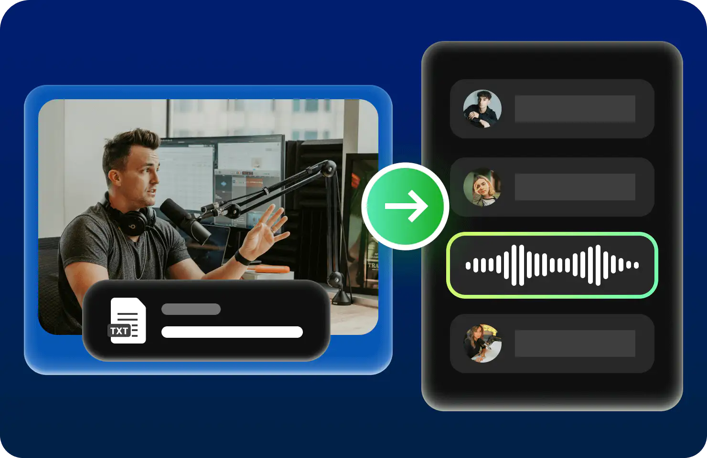

录咖：我花 20 分钟把一段 TikTok 美妆视频变成能发抖音的中文片
做短视频运营的都知道，找海外爆款素材不难，难的是本地化。录咖这套 AI 工具把去字幕、去水印、翻译配音、字幕样式全部串成了一条流水线，我实际跑了一遍，体验出乎意料地顺畅，也遇到了几个需要手动过审的小坑。
为什么我会去用录咖
朋友上周跟我炫耀，说他做 TikTok 搬运到国内，每天能跑 20 条。我第一反应是"你找了翻译团队？"他嘿嘿一笑甩给我录咖官网的链接——原来有人已经把海外视频本地化这条流水线全自动化了。
说实话我之前对 AI 音视频工具的印象还停留在"能凑合用但不能当真"，所以这次特地找了一段 TikTok 美国站的 2 分钟美妆教程，打算完完整整走一遍录咖的流程。原视频有硬英文字幕、带 TikTok 右下角的账号头像和点赞按钮，目标是处理完直接发抖音、视频号、小红书三个平台。
初印象：界面比想象中朴素
打开网页端登录，第一眼我没认出来这是个 AI 工具——没有花哨的渐变色背景，没有弹窗引导，甚至连新手教程入口都藏得很深。左侧导航栏是固定结构，三组分组：AI 六件套（语音转文字、字幕生成、视频翻译、文字转语音、音视频总结、视频生成 Agent）、中间是去水印和爆款复刻、底部是基础工具兜底。中间主工作区就是上传 → 参数配置 → 结果的三步式模板，所有功能都套这个壳。
拖拽上传是全局生效的——任何页面把文件拖进浏览器窗口就能触发上传，不用先点左侧选功能再上传。这个小细节我挺喜欢，说明设计师真的懂重度用户的操作习惯。不过说实话，第一次看到六件套的时候我还是有点懵——这么多功能堆在一起，到底从哪开始？
核心体验一：去字幕和去水印的无缝衔接
第一步处理是 AI 去字幕。原视频的英文字幕在画面底部，背景是粉色渐变，我选了高级模型（30 算粒/分钟）。2 分钟视频跑了差不多 2 分钟，输出文件自动保存在"我的空间"。
接下来去水印是整个流程里最爽的一步——我直接从"我的空间"选中刚才去完字幕的文件，不用重新上传。AI 自动框住了 TikTok 右下角的头像和点赞按钮，我检查了一下框没扩大到视频内容（美妆产品特写），点确认就开始跑。整个过程没超过 3 分钟。
说实话这比我之前用 Photoshop 手动擦要快太多了——以前去字幕至少 30 分钟，去水印又 20 分钟，两个环节加起来 50 分钟起步。录咖用 AI 把这两个步骤压缩到了 5 分钟以内，而且是连续工作不用来回切换工具，这一点真的是降维打击。
核心体验二：AI 视频翻译的配音出乎意料地自然
这一步是我最期待的，也是整条流水线的核心。从"我的空间"选中干净的原视频，参数配置：源语言英语、目标语言中文简体、开启配音。音色我选了"欣怡"——明亮女声，美妆教程用这个调性合适。原音轨混合保留 20%，这样能留住视频里的背景音乐和产品打开的声音，只把人声轨换成中文配音。
跑了大概 8 分钟，中间我去厨房倒了杯水。回来一看，中文字幕已经烧录上去了，配音也是中文女声。我点播放从头听到尾——说实话，比我预期的好。产品名"遮瑕膏""定妆喷雾"都翻译对了，只有一个品牌名 Fenty Beauty 被硬翻成了"芬蒂美"，需要手动改回来。配音偶尔有一两个词发音有点机械，比如开头的"好的"，但整体节奏自然，不影响观感。字幕时间戳和中文配音完全同步，这点挺惊喜的。

核心体验三：算粒消耗是硬伤
这里要说实话——录咖的算粒计费对重度用户来说压力不小。2 分钟视频的完整流水线消耗了大约 112 算粒，详细消耗表可以在录咖文档里查到，不同功能的算粒差异挺大的：去字幕高级模型 30×2=60，去水印估 30，翻译配音 10×2=20，字幕样式优化 2。免费版每天只有 50 算粒额度，也就是说免费版一天连一条完整流水线都跑不完。
商业包年会员是 24000 算粒/年，算下来一天能跑 214 条这样的视频——这个量对运营团队来说够用，但对个人用户来说一年两千多的成本需要好好算一算 ROI。不过如果你是跨境电商或 MCN 机构，这个投入可能几天就能回本。想用的话直接从官方下载就行，网页端也能用。
字幕编辑器的灵活性超出预期
翻译完如果对字幕样式不满意，可以把视频重新送 AI 字幕识别功能，让 AI 重新读一遍中文字幕。然后在字幕编辑器里可以逐行调整——字体换成圆体、颜色调成白色加黑色粗描边、位置避开抖音的点赞按钮区域、大小改成大号。这个编辑器的时间戳可以逐行微调，如果你发现某一句字幕和配音差了半秒，直接拖一下就行。
我花了 5 分钟把字幕样式调成了适合竖屏短视频的版本，重新烧录后输出的就是最终成品。
最终对比：20 分钟 vs 3~7 天
把所有环节加起来：下载 1 分钟、去字幕 2 分钟、去水印 2 分钟、翻译配音 8 分钟、字幕样式优化 5 分钟、过审 3 分钟、裁剪多平台比例 2 分钟——总共约 23 分钟，我掐着表算的。
传统做法是什么样？下载 1 分钟、Photoshop 手动去字幕 30 分钟、Photoshop 手动去水印 20 分钟、找翻译加配音员后期混剪 3~7 天、剪映调字幕样式 15 分钟。
差距不是一点半点。
适合谁，不适合谁
适合的场景：
- 有稳定海外素材来源的短视频运营，每天需要处理多条视频
- 跨境电商，产品介绍视频需要出海（反向也支持，国内视频翻译成外语发海外）
- 内容创作者自己录的视频，需要加字幕或翻译
不太适合：
- 个人偶尔做视频的用户，算粒消耗相对成本偏高
- 追求极致精度的品牌方，AI 翻译偶尔会把品牌名和专有名词翻错
- 完全没有拍摄素材、想用 AI 视频生成从零做原创视频的人——录咖的视频生成功能虽然性能对标 Sora/Kling，但算粒消耗太贵（720P 48 算粒/秒），1 分钟视频就要 2880 算粒
一点使用心得
AI 工具再强也不是万能的。翻译完一定要花 3 分钟扫一遍——重点看品牌名、专业术语、数字，这三类是 AI 最容易犯错的地方。我这次就是漏看了 Fenty Beauty 的翻译，如果直接发出去被品牌方盯上就麻烦了。
另外，找素材时尽量选字幕位置靠边缘、不遮挡主体的视频，AI 去字幕处理这样的素材效果最好。如果字幕正好盖住人脸下半部分，AI 需要重建被遮挡的区域，可能会出现轻微模糊。还有一点，如果你只有一个模糊的想法（比如"我想做一个介绍护肤霜的视频"），不用自己硬写提示词——录咖的视频生成 Agent 可以跟你对话，帮你写文案、生成脚本、选画面、自动配旁白加字幕，一步到位。
总体来说，录咖这条流水线的完整度超乎我的预期——界面设计克制不花哨，功能串起来形成闭环，算粒计费清晰透明。唯一的门槛是算粒额度，免费版不够用，付费版对重度用户友好但对偶尔使用的人来说门槛有点高。如果你真的每天要处理多条视频，这 20 分钟 vs 3~7 天的差距，可能值得这笔投资。这套资料在 GitHub、Gitee、GitCode 三个仓库都能拿到，方便不同网络环境的朋友随时查阅。